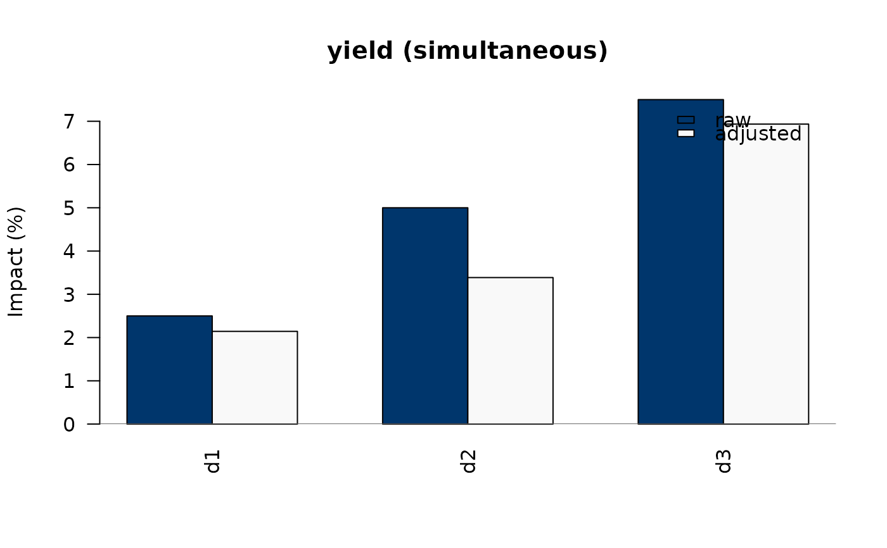
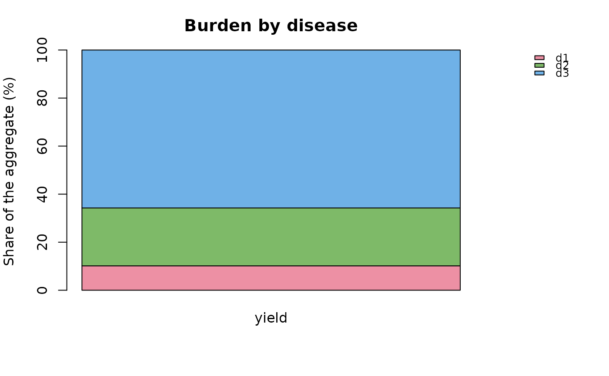

Base-graphics plots for the main result types:
plot(<cm_result>): raw and adjusted impacts by disease, one panel per outcome.plot_burden(): each disease's share of the burden per outcome (main effects and interaction shares), or monetary losses ifeconomicsis given.plot(<cm_mc>): Monte Carlo means and intervals of adjusted impacts.plot(<cm_screen>): the most influential pairs fromscreen_associations()orscreen_interactions().plot(<cm_oat>): tornado plot fromsensitivity_oat().
Usage
# S3 method for class 'cm_result'
plot(x, outcome = NULL, ...)
plot_burden(result, economics = NULL, ...)
# S3 method for class 'cm_mc'
plot(x, outcome = NULL, probs = c(0.025, 0.975), ...)
# S3 method for class 'cm_screen'
plot(x, top = 15, ...)
# S3 method for class 'cm_oat'
plot(x, top = 15, ...)Arguments
- x, result
The object to plot.
- outcome
Outcome(s) to show (default all, or the first for Monte Carlo results).
- ...
Passed to the underlying graphics function.
- economics
Optional economics list (see
value_losses()).- probs
Interval bounds for Monte Carlo plots.
- top
Number of rows to show.
Examples
res <- deconflate(example_uk_dairy_2022(), method = "published")
plot(res, outcome = "yield")

plot_burden(res)
